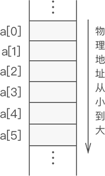
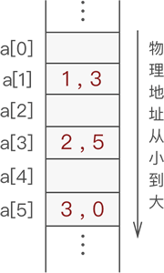
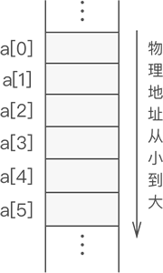
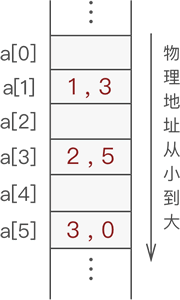
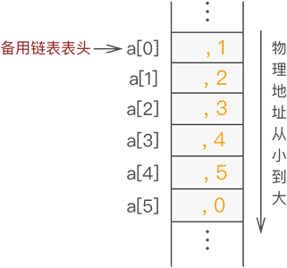
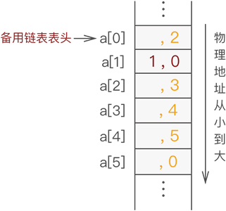
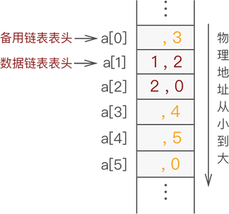
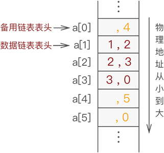

静态链表及其创建（C语言实现）
《顺序表和链表优缺点》一节，我们了解了两种存储结构各自的特点，那么，是否存在一种存储结构，可以融合顺序表和链表各自的优点，从而既能快速访问元素，又能快速增加或删除数据元素。
静态链表，也是线性存储结构的一种，它兼顾了顺序表和链表的优点于一身，可以看做是顺序表和链表的升级版。
使用静态链表存储数据，数据全部存储在数组中（和顺序表一样），但存储位置是随机的，数据之间"一对一"的逻辑关系通过一个整形变量（称为"游标"，和指针功能类似）维持（和链表类似）。
例如，使用静态链表存储
创建一个足够大的数组，假设大小为 6，如图 1 所示：

图 1 空数组
接着，在将数据存放到数组中时，给各个数据元素配备一个整形变量，此变量用于指明各个元素的直接后继元素所在数组中的位置下标，如图 2 所示：

图 2 静态链表存储数据
类似图 2 这样，通过 "数组+游标" 的方式存储具有线性关系数据的存储结构就是静态链表。
因此，静态链表中节点的构成用 C 语言实现为：
备用链表的作用是回收数组中未使用或之前使用过（目前未使用）的存储空间，留待后期使用。也就是说，静态链表使用数组申请的物理空间中，存有两个链表，一条连接数据，另一条连接数组中未使用的空间。
例如，使用静态链表存储

图 3 备用链表和数据链表
图 3 中，备用链表上连接的依次是 a[0]、a[2] 和 a[4]，而数据链表上连接的依次是 a[1]、a[3] 和 a[5]。
下面给出了创建静态链表的 C 语言实现代码：
静态链表，也是线性存储结构的一种，它兼顾了顺序表和链表的优点于一身，可以看做是顺序表和链表的升级版。
使用静态链表存储数据，数据全部存储在数组中（和顺序表一样），但存储位置是随机的，数据之间"一对一"的逻辑关系通过一个整形变量（称为"游标"，和指针功能类似）维持（和链表类似）。
例如，使用静态链表存储
{1,2,3} 的过程如下：创建一个足够大的数组，假设大小为 6，如图 1 所示：

图 1 空数组
接着，在将数据存放到数组中时，给各个数据元素配备一个整形变量，此变量用于指明各个元素的直接后继元素所在数组中的位置下标，如图 2 所示：

图 2 静态链表存储数据
通常，静态链表会将第一个数据元素放到数组下标为 1 的位置（a[1]）中。
图 2 中，从 a[1] 存储的数据元素 1 开始，通过存储的游标变量 3，就可以在 a[3] 中找到元素 1 的直接后继元素 2；同样，通过元素 a[3] 存储的游标变量 5，可以在 a[5] 中找到元素 2 的直接后继元素 3，这样的循环过程直到某元素的游标变量为 0 截止（因为 a[0] 默认不存储数据元素）。类似图 2 这样，通过 "数组+游标" 的方式存储具有线性关系数据的存储结构就是静态链表。
静态链表中的节点
通过上面的学习我们知道，静态链表存储数据元素也需要自定义数据类型，至少需要包含以下 2 部分信息：- 数据域：用于存储数据元素的值；
- 游标：其实就是数组下标，表示直接后继元素所在数组中的位置；
因此，静态链表中节点的构成用 C 语言实现为：
typedef struct {
int data;//数据域
int cur;//游标
}component;
备用链表
图 2 显示的静态链表还不够完整，静态链表中，除了数据本身通过游标组成的链表外，还需要有一条连接各个空闲位置的链表，称为备用链表。备用链表的作用是回收数组中未使用或之前使用过（目前未使用）的存储空间，留待后期使用。也就是说，静态链表使用数组申请的物理空间中，存有两个链表，一条连接数据，另一条连接数组中未使用的空间。
通常，备用链表的表头位于数组下标为 0（a[0]） 的位置，而数据链表的表头位于数组下标为 1（a[1]）的位置。
静态链表中设置备用链表的好处是，可以清楚地知道数组中是否有空闲位置，以便数据链表添加新数据时使用。比如，若静态链表中数组下标为 0 的位置上存有数据，则证明数组已满。例如，使用静态链表存储
{1,2,3}，假设使用长度为 6 的数组 a，则存储状态可能如图 3 所示：
图 3 备用链表和数据链表
图 3 中，备用链表上连接的依次是 a[0]、a[2] 和 a[4]，而数据链表上连接的依次是 a[1]、a[3] 和 a[5]。
静态链表的创建
假设使用静态链表（数组长度为 6）存储{1,2,3}，则需经历以下几个阶段：-
在数据链表未初始化之前，数组中所有位置都处于空闲状态，因此都应被链接在备用链表上，如图 4 所示：

图 4 未存储数据之前静态链表的状态
当向静态链表中添加数据时，需提前从备用链表中摘除节点，以供新数据使用。
备用链表摘除节点最简单的方法是摘除 a[0] 的直接后继节点；同样，向备用链表中添加空闲节点也是添加作为 a[0] 新的直接后继节点。因为 a[0] 是备用链表的第一个节点，我们知道它的位置，操作它的直接后继节点相对容易，无需遍历备用链表，耗费的时间复杂度为
O(1)。 -
在图 4 的基础上，向静态链表中添加元素 1 的过程如图 5 所示：

图 5 静态链表中添加元素 1 -
在图 5 的基础上，添加元素 2 的过程如图 6 所示：

图 6 静态链表中继续添加元素 2 -
在图 6 的基础上，继续添加元素 3 ，过程如图 7 所示：

图 7 静态链表中继续添加元素 3
下面给出了创建静态链表的 C 语言实现代码：
#include <stdio.h>
#define maxSize 6
typedef struct {
int data;
int cur;
}component;
//将结构体数组中所有分量链接到备用链表中
void reserveArr(component *array);
//初始化静态链表
int initArr(component *array);
//输出函数
void displayArr(component * array,int body);
//从备用链表上摘下空闲节点的函数
int mallocArr(component * array);
int main() {
component array[maxSize];
int body=initArr(array);
printf("静态链表为：\n");
displayArr(array, body);
return 0;
}
//创建备用链表
void reserveArr(component *array){
for (int i=0; i<maxSize; i++) {
array[i].cur=i+1;//将每个数组分量链接到一起
array[i].data=-1;
}
array[maxSize-1].cur=0;//链表最后一个结点的游标值为0
}
//提取分配空间
int mallocArr(component * array){
//若备用链表非空，则返回分配的结点下标，否则返回 0（当分配最后一个结点时，该结点的游标值为 0）
int i=array[0].cur;
if (array[0].cur) {
array[0].cur=array[i].cur;
}
return i;
}
//初始化静态链表
int initArr(component *array){
reserveArr(array);
int body=mallocArr(array);
//声明一个变量，把它当指针使，指向链表的最后的一个结点，因为链表为空，所以和头结点重合
int tempBody=body;
for (int i=1; i<4; i++) {
int j=mallocArr(array);//从备用链表中拿出空闲的分量
array[tempBody].cur=j;//将申请的空闲分量链接在链表的最后一个结点后面
array[j].data=i;//给新申请的分量的数据域初始化
tempBody=j;//将指向链表最后一个结点的指针后移
}
array[tempBody].cur=0;//新的链表最后一个结点的指针设置为0
return body;
}
void displayArr(component * array,int body){
int tempBody=body;//tempBody准备做遍历使用
while (array[tempBody].cur) {
printf("%d,%d ",array[tempBody].data,array[tempBody].cur);
tempBody=array[tempBody].cur;
}
printf("%d,%d\n",array[tempBody].data,array[tempBody].cur);
}
代码输出结果为：
静态链表为：
-1,2 1,3 2,4 3,0
关注公众号「站长严长生」，在手机上阅读所有教程，随时随地都能学习。内含一款搜索神器，免费下载全网书籍和视频。

微信扫码关注公众号